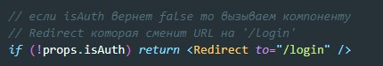
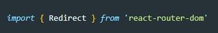

Redirect - это компонента которая позволяет нам при переходе на определенную старницу переносится на другую. В каких случаях это полезно? Ну например мы должны отображать какие-то страницы только авторизованным пользователям, если пользователь не авторизован, то его при переходе на недоступную страницу будет переносить на страницу авторизации.
Пример
В state мы храним переменную, которая содержит булевое значение авторизован пользователь или нет. Так же у нас есть страница с сообщениями, которую мы хотим запретить к показу пользователю который не прошел авторизацию. Для начала прокинем через пропсы из state показатель авторизации. После этого перет render-ом прописываем условие:
Перед этим не забываем импортировать компоненты Redirect
